This fan-made system has all the features you need to play OSE or the Basic/Expert edition of this good old TRPG.
This comprehensive user guide will show you the basics and reveal some hidden features and hacks.
For further documentation on how to use Foundry VTT please go to Foundry VTT Knowledge base.
Installation
You'll need a Foundry VTT License or GM access to a Foundry VTT server.
- Launch Foundry VTT.
- Go to Game Systems, Install System.
- Find 'Old-School Essentials' and click Install.
- Create a new World using the Old-School Essentials system.
Setup
You can find System settings in the Configure Settings dialog you open from the sidebar

These are several settings to customize your experience with Old School Essentials.
- Individual initiative:The default behavior for initiative is to have only one roll per faction. This will come back to Foundry VTT default behavior, and show the initiative field on character sheets, see the Attributes section.
- Ascending Armor Class:Old School Essentials default option is to use the original descending Armor Class and the 'To Hit AC 0' attack statistic alias THAC0. If this input is checked, this will come back to the familiar Attack Bonus as well as an Ascending Armor Class.
- Morale Rating: This will show a Morale Field in the Monster sheet so you can record and roll a Morale check to see wether your monster has a survival instinct or will fight till the end.
- Encumbrance:The weight a character is carrying
is a significant part of the players treasure hunting adventures.
You have three options here.
- Disabled: You can disable the effect of weight on movement, it will still be calculated.
- Basic: This will add only the weight of your treasure, and take into account the armor you're wearing to find your movement rate.
- Detailed: All the weight you carry will be counted, your movement value depends on the fraction of your max encumbrance you carry.
- Significant treasure weight: If you have the Basic encumbrance option enabled, the movement rate will depend on a predefined weight at which you consider the treasure to be cumbersome. You can set the value here and it will be used to determine the movement rates of characters.
Characters
Tweaks
You customize characters through this menu accessible from the header of the character sheet.
- Spellcaster: Shows the Spells tab
- Retainer: Adds the Loyalty rating attribute, replaces the Title field in the header by a Wage input.
- Initiative Bonus: Will add this value to initiative in addition to the Dexterity modifier.
- Next Level: The threshold at which the level field in the Header section of the character sheet will animate.

- Bonus experience: This will add to the experience dealt from the Party Sheet
- Experience share:: The share of the party XP you will get from the experience dealt.
- Melee Bonus: A bonus to the Attack roll only for melee weapons.
- Missile Bonus: A bonus to the Attack roll only for missile weapons.
- Armor Class: This value will be added (ascending) or subtracted (default) to the Armor class value that initially depends on the armor you wear and your Dexterity modifier.
- Encumbrance (GM Only): The maximum value at which you can't move anymore. If you have an encumbrance of 1800 it will delay any movement penalty by 200 (1800-1600).
- Calculate movement (GM Only): if you have a tricky case where movement should be manually set, you can uncheck this.
Header

The Character sheet header contains text fields you can edit directly. There is no automation done with those fields and you will have to type them manually in most cases.
The greyed text on top of the experience field is the XP prime requisites bonus that can be set in the Tweaks dialog (see below). It is used when experience is dealt automatically via the party sheet.
If the character survives long enough, the Level field will have a flash animation as soon when the character got enough experience to level up. This experience threshold is set in the Tweaks dialog.
Attributes
The Default tab is dedicated to the statistics of the actor.
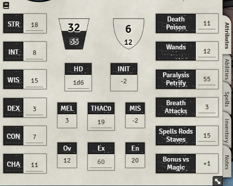
Left
This records the attribute scores. You can edit those values directly.
Rolls can be made by clicking on the attribute name, after clicking you will see a dialog where you can input modifiers. If you try to roll the attributes will holding the CTRL key, the dialog will be skipped.

Above the attributes you can click on the book icon to see the influence of all the attributes on the other stats of your character. That will be useful during character creation, but also to see other stats like your maximum number of retainers, or literacy.
Center
Hit points current and max values: the 'bucket' will empty as you lose HPs.
An Armor class within a shield shape: The value above is the AC and below will be the unarmored armor class. It's calculated depending on the armor you have equipped. You can add an armor bonus in the Tweaks dialog. If there is a small shield icon on top of the Armor class value, it means you have a shield equipped that should not be taken into account when you are attacked from behind.
On the second row there is a Hit Dice field you can roll, and if the individual initiative is set in the Settings, there is the initiative value. This value is calculated but you can add a modifier in the Tweaks dialog.
The third row details the Attack statistics. It will change if you have the Ascending AC setting enabled. At the center you will find the THAC0 or Attack Bonus (AB), on the left the Melee attack modifier that is influenced by strength and on the right the Missile modifier influenced by Dexterity. you can hover both to have the details of the calculation, and add a bonus if needed in the Tweaks dialog. Both field names are clickable and will roll attacks that can be speedrolled by maintaining the CTRL key.

The last row shows the three movement stats, they are automagically set by default, depending on the weight you are carrying and the encumbrance options (See the inventory section). You can disable this behavior through the Tweaks dialog.
Right
Here are recorder the saving throw scores. Complete names and abbreviations can be seen on hover. This can be rolled when the save name is clicked, and can be speedrolled with CTRL as well.

The last value for Bonus versus magic must be manually added to the roll by using the dialog that pops without speedrolling.
Abilities
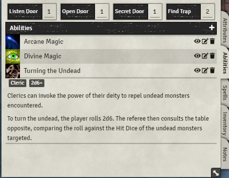
The first row contains rollable entries for exploration rolls. Those can be speed rolled as well.
In the abilities section you can create anything that needs a description. It can be thieves skills, class abilities, and so on. You can create a new ability by clicking the plus button or by dragging one from the item sidebar or a compendium. You can open the abilities with the pen icon, show it in the chat with the eye icon, and delete it with the trash icon.

When opened, the ability details can be entered. On the left you see you can set the ability requirements, for example `Thief, 1`, you can enter a roll associated with the ability. For example if Roll is `1d100`, roll type is `>=` and target is `40`. The roll will display success in green as soon as the result is above 40. When the ability has a roll set you can click on the ability image on the character sheet to roll directly to the chat. You can apply the roll result as damage or healing by right clicking on the chat card, this is true for all rolls.
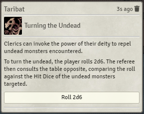
If you need someone else to roll the ability you can show the whole ability to the chat with the eye icon and they can roll from there. Note that you can slide down the ability description by clicking on its name from the character sheet.
Spells

You won't have this tab displayed by default. You must enable the `spellcaster` checkbox in the Tweaks dialog located in the sheet toolbar.
Here you can record your spellbook content. First you can add a new spell by clicking the plus. For each level of spell you have you will have a new section for its level with it's related spell slot counter.
At the beginning I recommend creating one New Spell for each spell level you have and then change their level by opening them, it will unblock the spell slot counters.
Spell slots counters have two values. The first one is the number of spells you have memorized, it can't be edited. And the second one is the total number of spell slots you have. You should edit those as you gain new levels.
Spells themselves have counters. The first is the remaining available spells, the second is the number of this spell you memorized. The spell counter decreases as you roll them by clicking their image. Spell slots that have been used can all be refilled by clicking the reset icon in the spells tab header.
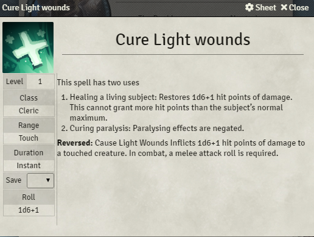
Spells are similar with abilities but have a few more infos. Rolls can't be configured as much, you can only set a roll string that respects Foundry VTT syntax. However you can specify a Save so when the Spell is displayed on chat with the eye icon, a button that triggers a save roll from the selected actors is displayed below the spell description.

Inventory
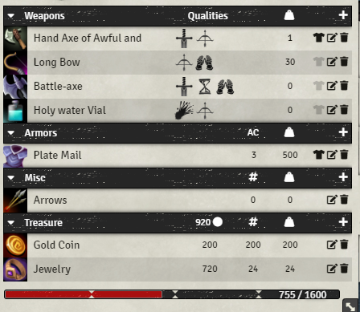
The inventory compiles every item you own from the weapon to the treasure. Weapons are in the first section. Clicking on the weapon icon will roll an attack with damage.
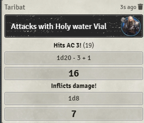
Damage rolled during the attack can be applied to one or several selected tokens if you click on the blood drop icon right to the result. You can apply damage or healing by right clicking on the chat card, this is true for all rolls.
Clicking on the name will expand the item description along with relevant tags. Here it's the damage.

It is possible to equip an item. The only mechanical value it has for now is the influence of the Slow weapon tag on initiative. Tags that are recognized will be displayed as icons. If you don't have Foundry VTT set has english and you use a translation (French, Spanish), you will have to use the tags translation to have it matched. Other tags will be written as text.
When you open the weapon sheet by clicking on the pen icon, you can edit the stats and add new tags. Slow, Melee, and Missile tags will check automatically the matching checkbox. But won't uncheck it.

Weapons can have attack bonuses. You can add new weapon tags if you type text in the field below the weapon icon and press ENTER. You can copy the whole qualities field from the book as the tag parser will split the commas, and set the text between brackets as a hover text.
Other items won't be clickable. Armors have configurable Armor Class and an Armor type, Misc items can have a quantity directly editable from the inventory list. If checked as Treasure, it is counter in the total treasure displayed in the treasure header.
Below is the encumbrance bar. This is used for the auto mouvement calculation. If you're encumbrance max value is 1600 as default, each cursor passed are the threshold you will lose movement.
Notes
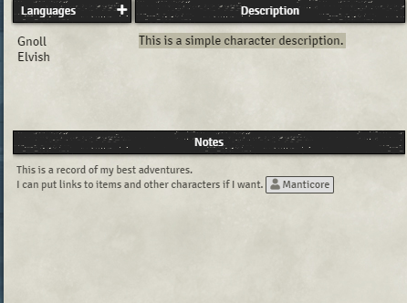
This tab is a free space you can record description and notes. This is enriched so you can use inline rolls, entity links and other fun things.
You can add known language by clicking on the plus next to the language header. The number of language you can speak can be found in the modifier dialog in the attribute tab.
The language list was made compatible with the Polyglot module from Kakaroto, you can find it here or in the module list within Foundry VTT.
We have finished with the character sheet. Feel free to post issues on gitlab or contact me for more informations.
Monsters
Tweaks

The tweaks menu for monsters is lighter. You can enable spells, add a value to initiative, set as retainer and that's pretty much it.
Header
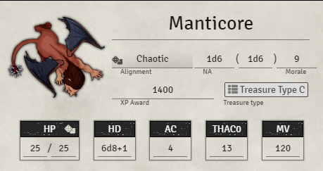
There is a lot happening here. The first row below the name are all rollable fields. The alignment rolls a plain 2d6 on the reaction table. The two number appearing can be rolled and the morale as well. The XP award is just plain text though.
The Treasure type is a link to a rollable table. When you drop a rollable table on a monster sheet it will show up here so you can access the treasure table quickly and roll that loot.
Abilities

The Hit Points can be silently rolled as you click on the dice next to the header. That is why Hit dice must be a rollable string. AC is manually typed and there is no calculation involved. Clicking on THAC0 will launch a raw Attack with 1d6 damage.
The abilities and equipment panel will contain all the heart and soul of your monster. You can set clickable abilities like for characters. There is also a weapon counter so you know how many attacks you made each round with your monster. The counters are reset with the icon in the header.
On the left of the weapon icons, in the list, you can mark the item with a color so you can distinguish attack patterns. In the example here I have in red 2xClaws and Bite so here is my attack pattern. If I choose green I have a tail spike attack.
You can record movement details for non-walking movement options your monster may have. Below are your monster's save that you can roll and speedroll with CTRL maintained.
Monsters use the same content as characters for spells, weapons and items. The Note tab is only a large text editor where you can input the monster description or any other particularities that does not fit on the sheet itself.
Initiative
Grouped initiative
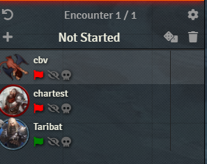
By default each character or creature is assigned to a group. If their disposition is hostile in the Token configuration they will be in group 'Red', Neutral is yellow, Friendly is green. But the GM can change the group you belong by clicking on the flag, there is a limited number of colors but it should be enough I hope.

When you are happy about the groups, you can begin the combat by clicking below the combat tracker. You can reroll the initiative manually with the dice above the tracker. But if you go to the next round it will be rolled again. Characters equipped with a Slow weapon have a Weight displayed in place of the initiative value. If they unequip the weapon they can reset their initiative to the group value by right clicking and select 'reroll'.
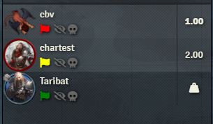
Individual initiative
For this part I invite you to read Foundry VTT documentation, you will find exactly the same behavior and features here, except that initiative will be automatically rerolled when you go to the next round.
Treasure tables
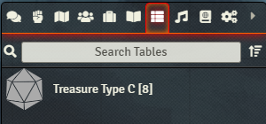
You can find Foundry VTT rollable tables in the sidebar. The default rollable tables can't handle treasure like specified in the Old School Essentials books so I had to augment them.

You can toggle between the default rollable tables and the treasure table with the Chest icon right next to the table name. The default tables are selecting an entry by rolling a dice and returning the matching result. Treasure tables however, have a different behavior. Each entry is rolled with 1d100 and the value is compared to the 'chance field'. So it can return multiple items.
You can select the table type you need by clicking on the chest at the right of the rollable table name. Once you do the fields will change.
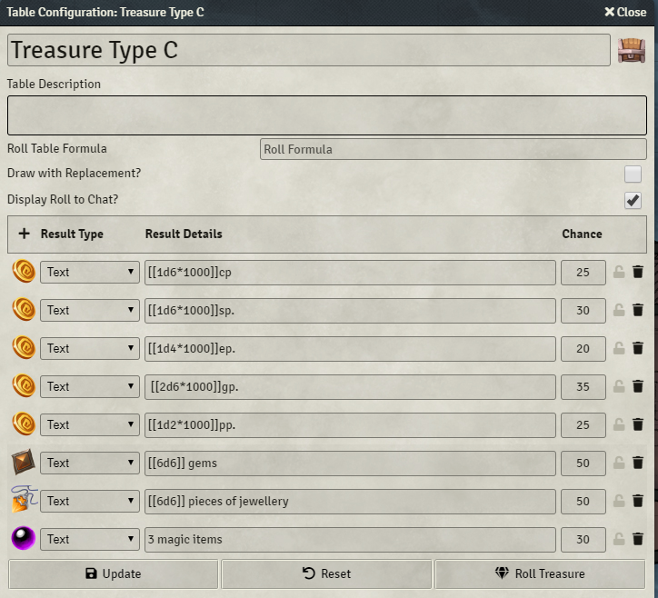
Foundry VTT allows rollable tables to be filled with enriched Text, Entities like journals and items and compendium objects. Here I use inline rolls from enriched text to tell how many coins I get.
If you have only one item to be rolled you can change the result type.
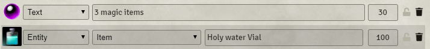
Once you roll the treasure you have the result displayed in the chat.
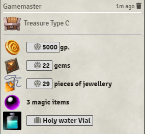
Party Overview

When in the Actors sidebar, you will find a new icon next to the search filter. This will open the Party overview app we are detailing here.

The party overview app will condense a lot of stats about your group. At first it will be empty so you will have to click on the group icon on top right to select which character/monster is part of the party. Sometimes after selecting party members you may have to resync the display by clicking the resync icon on top left of the window.
Almost every info shown on this party sheet is hoverable to have the exact name of what you are seeing. If you hover on the actor image you will se a button that allows you to open the actor sheet.
The open hand icon in the window header allows you to deal experience to the characters in the party. This will take into account the experience Share set in the Characters Tweaks dialog. After shares are calculated each actor will send a message to the chat telling how many experience points they get after applying their share and their experience bonus.
Don't forget to set the experience share to 50% for retainers!